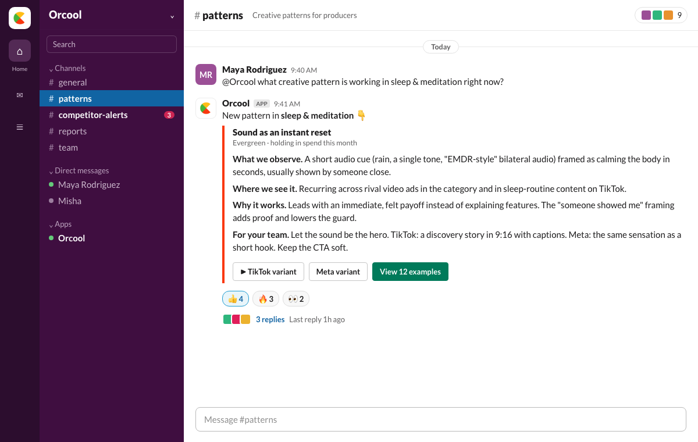
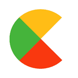

See what's winning in your market in five minutes: the competitor hooks running now, the messages that dominate your category, and what your customers actually want.
Free for two weeks. No card.
Speed compounds. Opinions don't.
Knowing what creative is winning meant opening a tool and pasting a slide into a thread. Once a week, by hand. You already run enrichment and scoring through agents. This was the one signal you couldn't call.
The metric is Time-to-Winner: days from start to a creative that clears your KPI gate and holds in spend. Signal in the pipeline is how you cut it.
Same engine behind all three. Read them in a channel, or call them from your agent.
A daily ping when a competitor makes a real move in the market. "Competitor X is moving into 3 new cities this month." A major launch, a strategic decision, an event or sponsorship they're running, caught from the press, not a week late.
The pattern that's working, its format variants, and why it lands. Structured, so your agent can use it.
What worked in your category this week, and why. Drop it into a brief or your scoring step. First one's free.
You don't get a finished ad. You get a Pattern: the mechanic that's working, where it shows up, why it works, and how your team builds it. They make it their own.
A producer asks. The pattern lands in their Slack channel, with format variants and live examples:

No competitor is named in the brief, the mechanic is.
Your team picks the variant and makes it their own.
Not insights. Orcool ranks what's proven in your competitors' live ads and hands you the hook to run, right where you're already working.

Specific mental struggle, then immediate relief. The longest-running, most-varied structure in your category: most of the competitor ads, March to June, kept fresh.
A mechanism a category leader is scaling hard: "a 60-second sound that resets your nervous system." About 12 of 28 ads over three months, many variants. That spread means a scaling winner, not a fluke. The other big player stays in a quieter convenience lane with fewer variants, so this is the angle with room to run.
"There's a 60-second sound trick that quiets a racing mind before bed. Most people have never tried it."
A winner clears your target CPA and survives a budget step-up without CPA blowing out. Not cheap clicks, conversions that hold. The asset is the repeatable engine, not one ad.
This run came back in Claude, with the MCP connected.
Add Orcool in Claude, Cursor, or ChatGPT. Paste a URL, sign in with a magic link. From there it's a tool call in whatever you're already building.
Sign-in is a single click from your email. No password, no separate account, no card. Use the same Orcool account in every client you connect.
Orcool works in ChatGPT, Claude, and Cursor. One rule that saves headaches: sign in with the same Orcool account in every client.
Fill in the brackets and paste this once. It sets up your brand, pulls the ads your competitors are running now, and turns your reviews into your first market signal.
You have Orcool connected. Set up my brand and give me my first market signal. MY BRAND - Name: [Your brand] - Website: [https://yourbrand.com] - Selling in: [your country] - Category: [your category] - Competitors: [Competitor 1, Competitor 2] - Reviews: pasted at the bottom, or here is where to find them: [App Store / Trustpilot link] DO THIS IN ONE GO 1. Set up my brand. 2. For each competitor, confirm you found the right official advertiser, then pull the ads they are running now. 3. Read my reviews and pull out what customers actually care about. THEN TELL ME, IN PLAIN LANGUAGE - The 3 strongest hooks my competitors are using right now, and why each one works. - The messages that dominate my category. - The single biggest thing my customers care about, with a real quote. Keep it to short summaries, not long lists. REVIEWS: [paste 5 to 15 reviews here, or leave a link above]
Which angle has run longest and spawned the most variants? Rank the proven winners and give me the hook to test first, with variants and a test plan.
What's trending in my market right now, and which hook is worth testing this week?
Watch [Competitor] and send me a daily digest of their new ads I can route to Slack.
From my reviews, what's the single biggest thing to fix, with a real customer quote?
Pull this week's competitor report for my category: what's working, and why.
First time? Give it a couple of minutes: the paste sets up your brand, pulls competitor ads, and turns your reviews into your first read on the market.
Paste the URL into Claude, ChatGPT, or Cursor.
A browser tab opens. Enter your email, click the link, you're in. No password.
Say one line. The report comes back as data, not a slide.
From start to a winner that holds, on a clock you control.
Same three signals. The difference is what you do next.
Three true, specific things about your market: the hooks your competitors are running right now and why they work, the messages that dominate your category, and the one thing your customers care about most, pulled from your own reviews. Real signal from live ads and real reviews, back before your coffee's cold.
Claude is sharp, but on its own it answers from training plus whatever it can browse in the moment. Connect Orcool and it gets a tool that reads what's live right now: the ads your competitors are running this week and your own customer reviews, structured and ranked. The MCP turns a confident guess into an answer grounded in today's market, in the same chat you already work in.
Yes. Every signal is a tool call, so anything that speaks MCP can trigger it: Claude, Cursor, your own agent, a cron, Clay, n8n. Read it in chat, or wire the output into a pipeline and join it to your own data. Same engine either way.
GTM engineers, growth, producers, and UA: anyone who decides what to make next and would rather call for the answer than dig for it. If you ship ads and want a read on what's working before you spend, it's for you.
The Ad Library hands you raw ads to scroll through one by one, with no read on what matters. Orcool watches them for you and tells you the pattern: which hooks repeat, which are holding, why they work, and how to use it. You get the conclusion, not a research project.
Live competitor ads across 40+ markets, the trends moving in your category, and the reviews your own customers write. Real sources, structured and explained, never invented.
It's pulled the moment you ask. Competitor ads reflect what's running now, so a fast-spreading hook reaches you while it's still worth testing, not after everyone has copied it. The sooner you see what's working, the sooner you find a winner.
No. You add Orcool to a client you already use, Claude, Cursor, or ChatGPT, and sign in with one click from your email. No new app, no password, no card. Then you just ask.
Connecting is free, and you get a two-week trial with no card. Your first market signal comes back in the first five minutes. After the trial, the recurring intelligence is about $250/mo, on a card, cancel anytime. The full creative cycle, finished ads that clear your bar and keep performing, is a separate engagement we scope with you. We don't sell one-off scripts or concepts.
You'll have the hooks that win, the messages that dominate, and what your customers actually want. The next step is turning that into creative that clears your bar and keeps performing. That's the full Orcool cycle, and it's one message away.
Free for two weeks. No card. Cancel anytime.
No card. No bullshit. Just start.